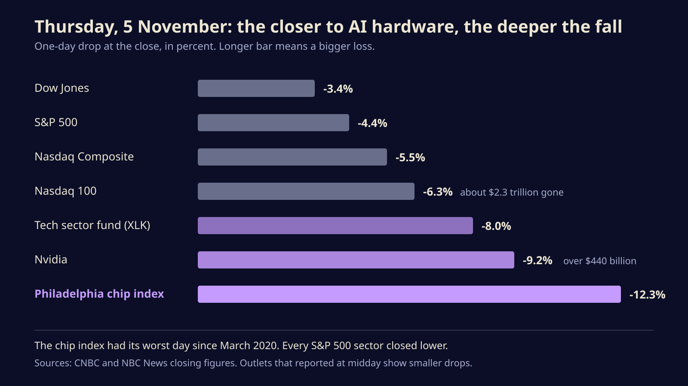
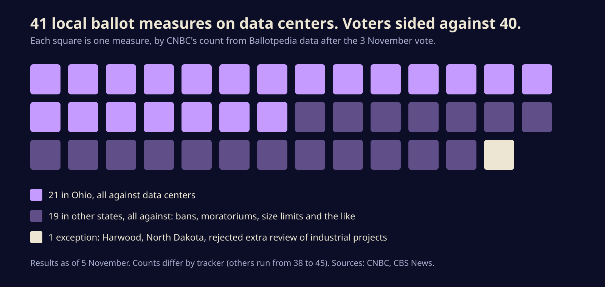

Voters turned on data centers, and Wall Street wiped $2.3 trillion off AI stocks in a day
Thursday's record tech selloff was not about chatbots. It was about permits, power bills and 40 local ballot measures. Here is what actually broke, and what it could mean for the compute you rent.
The Nasdaq 100 fell 6.3 percent on Thursday, erasing about $2.3 trillion in market value in a single session. The trigger was not a bad model or a missed earnings number. It was Tuesday's US midterm vote, where local voters rejected data centers almost everywhere they were asked, and newly elected governors in two of the biggest data center states ran on pausing construction.
For anyone who builds with AI, that is the part to pay attention to. The market just put a price on the idea that the hard limit on AI is no longer chips or money but permission to plug them in.
How bad Thursday was
The damage followed the supply chain. The Dow lost 1,833 points, or 3.4 percent. The S&P 500 fell 4.4 percent, and every one of its 11 sectors closed lower. The Nasdaq Composite dropped about 5.5 percent and slid into a correction, the trader's term for a fall of 10 percent from a recent high.
The closer a company sat to the racks, the worse it did. CNBC reports the big tech sector fund, XLK, fell 8 percent, its worst day since March 2020. Nvidia dropped 9.2 percent, shedding more than $440 billion and turning negative for the year. The Philadelphia semiconductor index fell 12.3 percent, also its worst day since March 2020, and memory makers such as Micron were among the hardest hit. Together the seven largest US tech companies lost more than $1 trillion.

Numbers vary a little between outlets because some reported at midday and some at the close. Al Jazeera's midday figures were smaller across the board. The figures above are closing numbers from CNBC and NBC News, which agree with each other.
What voters actually said
By CNBC's count, built on Ballotpedia data, there were 41 local ballot measures about data centers across 10 states on Tuesday. Ohio alone had 21. With results in, voters sided against data centers in every one except Harwood, North Dakota, where they turned down an extra review of industrial projects. The measures ranged from outright bans to moratoriums and limits on size or power use.
Other trackers count differently. CBS News cites a consultancy tally of 38 restrictive measures approved by Wednesday afternoon, and Tom's Hardware put the total on the ballot at 45. The direction is not in dispute; only the exact number is.

Local votes alone would not move $2.3 trillion. The statewide races did more. CBS News reports that Texas governor-elect Gina Hinojosa proposed a temporary ban on new data center construction, in a state that analysts at Yorkville Ives & Co. say will host 25 to 30 percent of the US data center capacity expected online by 2030. In Georgia, the third-largest market, governor-elect Keisha Lance Bottoms told CBS she would sign an executive order to pause new construction and would review the tax breaks that drew builders there. In Ohio, governor-elect Amy Acton backs a conditional moratorium that would make data centers pay all of their own utility costs.
The common thread is the power bill. Analysts tied the results to anger over rising electricity rates, which many voters now blame on data centers, and candidates found that saying so wins votes.
Why chips fell harder than the cloud giants
Microsoft, Alphabet, Amazon and Meta all fell on Thursday, but by less than the market. That is the tell. Those companies own data centers that are already built, powered and connected. Chipmakers and memory suppliers, by contrast, sell into buildings that do not exist yet. If permits slow down, their order books are what shrink first.
Seema Shah of Principal Asset Management made the flip side of that point to CBS: tighter rules raise costs for new projects, which makes capacity that is already powered and permitted worth more. Scarcity cuts both ways. Fewer new halls means the old ones get more valuable.
What it means if you rent compute
None of this changes your API bill tomorrow. Data centers take years to build, and most of the capacity coming online in 2026 and 2027 was permitted long before Tuesday. But a few things are worth watching.
- GPU rental prices in 2027 and 2028. If new capacity slows while demand keeps rising, the cheap and plentiful cloud GPU you got used to this year may not last. If you are signing a long reserved-capacity deal, the price you lock in now looks better in that world.
- Where your provider builds. Texas and Georgia were two of the busiest construction markets. Expect more new capacity to be announced elsewhere in the US and abroad, which can mean different regions, latency and data residency rules for your workloads.
- Efficiency starts to pay twice. Smaller models, caching, batching and running work off-peak already save money. In a power-limited world they are also how labs and clouds will stretch the capacity they have, so expect more pricing that rewards them.
- The first executive orders. Promises made on a campaign trail are not law. The real signal will be what the new governors sign after they take office early next year, and whether existing projects get exemptions.
The bottleneck in AI used to be chips. Tuesday's vote suggests it is now the zoning board.
Ed Yardeni of Yardeni Research told NBC News the drop was "an AI bubble losing some air," not a burst. That may be right. But the industry spent the last two years assuming the hard part was getting enough Nvidia parts. Voters have now made clear that the harder part is the town hall meeting, the substation and the electricity bill, and those do not ship on a quarterly schedule.
Sources
- CNBC, Magnificent 7 loses $1 trillion: the most eye-popping stats from Thursday's tech stock plunge
- NBC News, Stocks plunge as election outcome and AI worries crush tech shares
- CNBC, Voters rebuff data centers in every ballot measure except one during the 2026 midterms
- CBS News, Midterm elections could zap the data center buildout, experts say
- Al Jazeera, AI stocks plunge after US election, driving down markets
Written with AI for Bade's Mod Shop. Facts are checked against the sources above on the day of publishing; if one is wrong, open an issue.